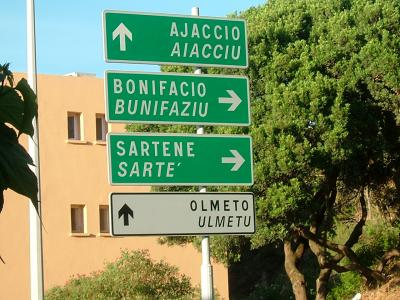
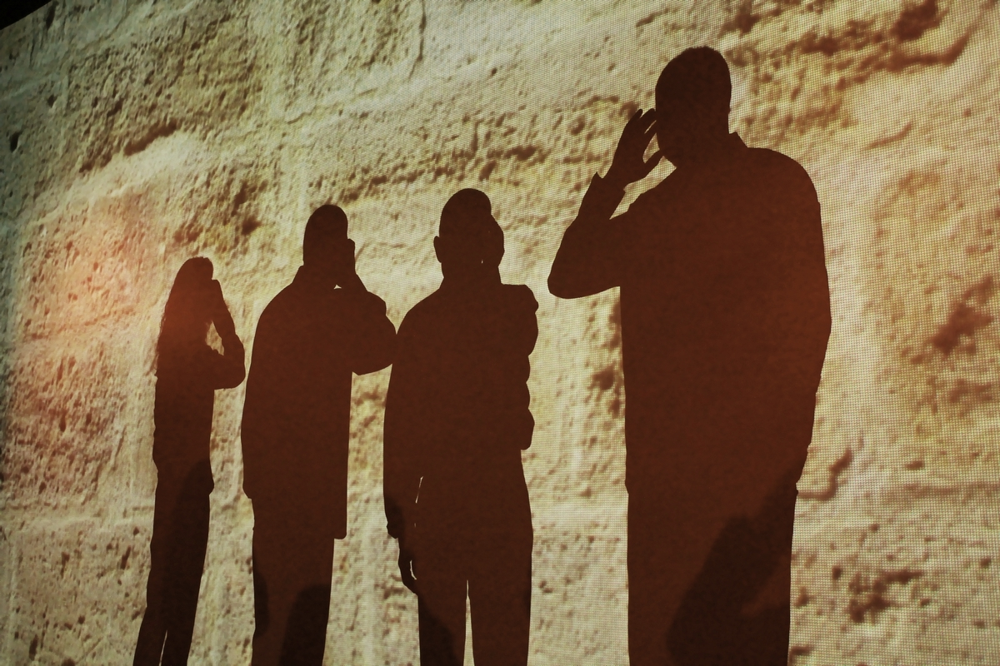
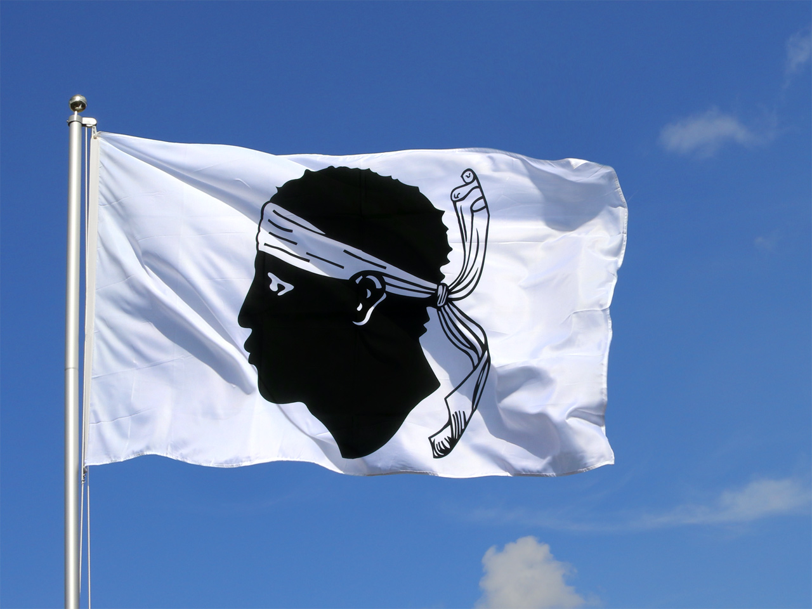

La langue corse a longtemps été seulement transmise à l'oral et n'a commencé à être écrite qu'assez récemment, c'est à dire au cours du XIXe siècle
(auparavant, la langue utilisée pour tous les actes écrits était l'italien. C'est par exemple le cas du testament de Pasquale Paoli).
Sa codification actuelle, issue d'une longue évolution non linéaire, est très récente et n'est d'ailleurs sans doute pas achevée. Car bien que la
plupart des écrivains actuels semblent admettre une certaine codification (celle donnée sur ce site), celle-ci est néanmoins remise fortement en cause
dans certains de ces aspects par des spécialistes

"Una lingua si cheta, un populu si more", Une langue qui se tait, c'est un peuple qui meurt,
Proverbe Corse
La musique corse

Elle est reconnue dans le monde entier, tant les chants corses sont pleins de caractère et de charme.
L’important dans ces champs, c’est la voix. Ils traitent de tous les thèmes, qu’ils soient heureux ou malheureux, des chants de soldats comme des chants de mariage et sont transmis de génération en génération.
Les chants les plus connus sont les chants polyphoniques qui se chantent traditionnellement lors des fêtes de villages, les processions religieuses ou pour une sérénade.
Les chanteurs peuvent être jusqu’à dix mais seulement trois voix suffisent pour faire un chant polyphonique.
La religion en corse
La Corse est très chrétienne, en raison des rites ancestraux qui ont marqué son passé. Les Corses accordent une importance particulière aux Saints, et notamment les saints patrons des villages mais aussi
la sainte patronne de l’île de beauté.
Ainsi, cette dévotion se traduit par de nombreuses fêtes religieuses et notamment l’Assomption qui a lieu le 15 août et qui fait lieu de fête nationale.
Parmi les fêtes qui sortent du commun et qui font partie de la culture Corse, vous trouverez la nuit du Vendredi Saint à Sartène.
Les hommes du village se disputent l’honneur de porter la croix de 37 kg sur plusieurs kilomètres. Le candidat est choisi des années à l’avance et seul le curé connaît son nom. Le jour du vendredi saint,
le pénitent devra porter la croix, vêtu d’une cagoule rouge sachant que l’un de ses pieds est entravé par de lourdes chaînes pour représenter le supplice du Christ.
L'origine du drapeau corse

Le drapeau représente un profil gauche d’un Maure, coiffée d’un bandana blanc. Auparavant, le bandana couvrait les yeux du Maure mais le général Paoli a décidé de le remonter sur le front pour
symboliser la liberté retrouvée de la Corse. L’histoire du drapeau est en lien direct avec l’histoire de l’île très convoitée. Avant d’être rattachée au Royaume de France, l’île appartenait à
la république de Gênes. En 1755, le général Paoli souhaite proclamer l’indépendance de la Corse comme nation à part entière. Le fameux drapeau à la tête de Maure est adopté en 1762 comme drapeau
officiel de la république corse. Mais cette période d’indépendance fut de courte durée; en 1778, la France rachete la Corse à la république de Gênes, incapable de gérer l’insurrection.
À partir de 1779, le drapeau fut par conséquent quasiment interdit. Plus tard, avec la création du royaume anglo-corse en 1794, la Corse connut une seconde période d’indépendance. Mais à
cette époque, le drapeau à la tête de maure était tombé dans l’oubli. Ce n’est qu’en 1980 qu’il fut finalement réhabilité en tant que drapeau régional. La tête de Maure est le symbole de la
Corse depuis l’époque où le royaume d’Aragon dominait les îles méditerranéennes. Une autre légende raconte que l’origine du drapeau corse date de l’époque de l’invasion de l’île par les sarrasins.
Pour impressionner et repousser leurs adversaires, les soldats corses auraient décapité leurs ennemis et présenté leurs têtes empalées sur des piques.
La tête de Maure serait alors devenue le symbole de la victoire des guerriers corses, avant de devenir un symbole national.